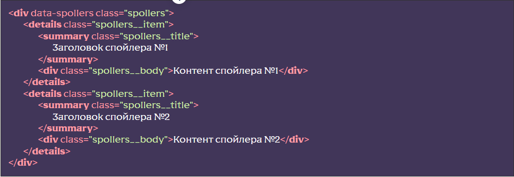
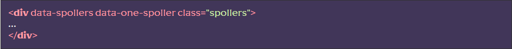
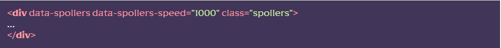
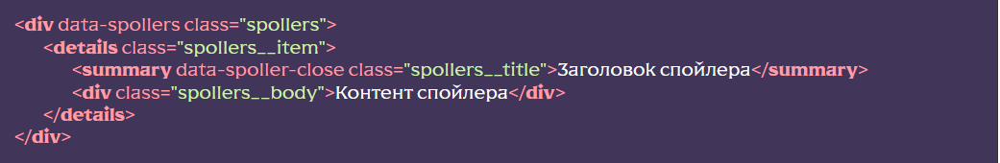
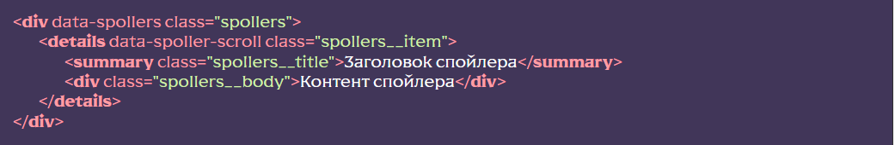
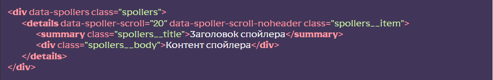

Основні можливості
- Використання безлічі блоків зі спойлерами
- Вимкнення/увімкнення функціоналу на певній ширині екрану
- Функція “акордеон”, коли в блоці може бути відкритий лише один спойлер
- Можливість закриття по кліку за межами спойлера
- Можливість анімованого відкриття
- Семантика та доступність
Підключення функціоналу
[HTML] У потрібному місці викликати сніпет spollers (класи замінити на потрібні). Або вручну створити структуру із відповідними дата-атрибутами. Зверніть увагу, що додавання атрибуту data-open для елемента details зробить спойлер активним (відкритим).
Приклад блоку з двома спойлерами: 
[JS] У файлі js/app.js розкоментувати рядок
flsFunctions.spollers();
[SCSS] (не обов’язково) Якщо ви
хочете одразу подивитися на роботу спойлерів та залишили класи запропоновані сніпетом, ви можете
розкоментувати рядок @import «base/spollers»; у файлі
src/scss/base.scss це підключить базові стилі, їх можна відредагувати під свої
потреби.
Прибрати стандартний маркер елементу summary
можна за допомогою css-параметру list-style: none;
У момент ініціалізації (увімкнення) функціонала спойлера контент буде прихований, а до елемента з атрибутом data-spollers буде додано клас _spoller-init
Використання функціоналу
Вимкнення/увімкнення функціоналу на певній ширині екрану
Для того, щоб вимкнути/включити функціонал спойлера на певній ширині екрана, необхідно для атрибуту data-spollers через кому вказати потрібну ширину екрану а також тип:
- max (за замовчуванням) — функціонал увімкнеться на ширині меншій за вказану
- min — функціонал увімкнеться на ширині більшій ніж зазначена
Увімкнення режиму “акордеон”
Для того, щоб увімкнути режим акордеон, необхідно для елемента з атрибутом data-spollers додати атрибут data-one-spoller
Тепер, при відкритті спойлера, інший відкритий спойлер у блоці закриватиметься
Управління швидкістю анімації
Для того, щоб керувати часом анімації відкриття/закриття спойлера, необхідно для елемента з атрибутом data-spollers додати атрибут data-spollers-speed, а в якості значення вказати час анімації в мілісекундах (за замовчуванням 500).
Закриття при кліку поза спойлером
Якщо необхідно закривати спойлер(и) при кліку поза блоком (“на порожньому місці”), слід додати потрібному заголовку(кам) атрибут data-spoller-close
Прокрутка до заголовку
Якщо необхідно прокрутити скрол до заголовку відкритого спойлеру, слід додати потрібному елементу (тег details) атрибутdata-spoller-scroll
Є можливість більш тонких налаштувань. Наприклад, якщо треба щоб скрол враховув шапку сайту (коли вона фіксована), то варто додати атрибут data-spoller-scroll-noheader.
Також, в самому атрибуті data-spoller-scroll можна дописати числове значення яке буде враховане при скролі:
Розташування та додаткові дані
Функціонал знаходиться у js/files/functions.js. Назва функціі spollers()